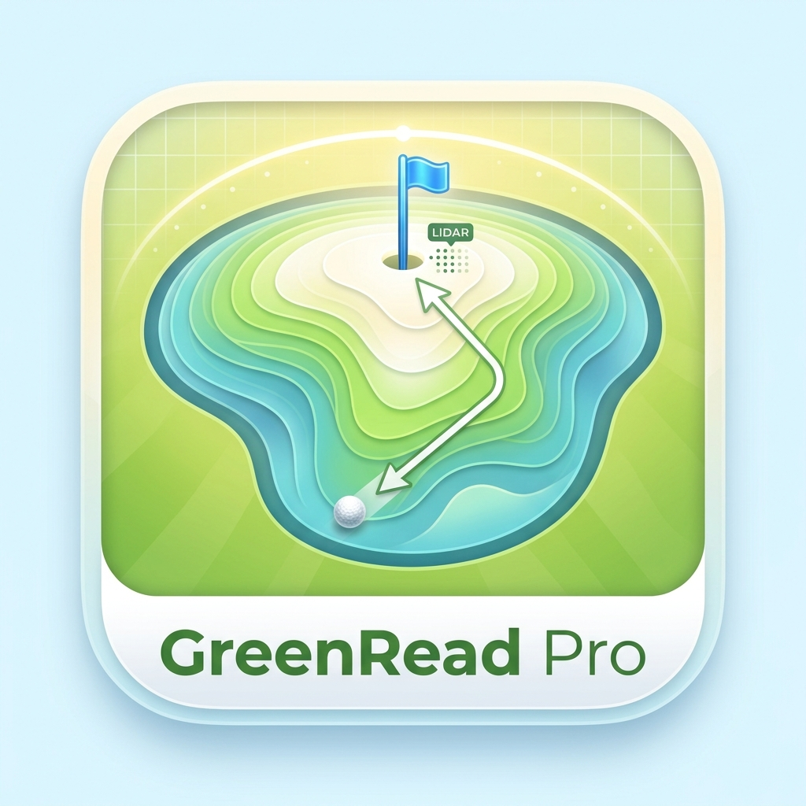

GreenRead Pro
Golf Green Slope Measurement App
GreenRead Pro Support Page
GreenRead Pro is a golf putting support app that uses the LiDAR scanner and camera on iPhone/iPad
to measure green slopes and help read putting lines. By aligning the on-screen markers with the actual
ball and pin (flag), then leveling device posture, the app displays distance, elevation difference,
break amount/direction, slope direction, and an estimated rolling line.
📱 Supported Devices:
A device with a LiDAR scanner is required (iPhone 12 Pro or later, iPad Pro).
Slope measurement is not available on devices without LiDAR support.
1. App Structure
Use the bottom tab bar to access each function.
| Tab | Description |
|---|
| Slope Measurement | Main screen. Place Ball and Pin on camera view to measure the green slope. |
| Settings | Configure measurement and display behavior. Some options are fixed until purchased. |
| Purchase | Buy the full version (one-time purchase) or restore past purchases. |
| Manual | View in-app operation instructions. |
On first launch, a pre-use agreement is shown. Review the notes about measurement accuracy and usage scope,
then scroll to the end and tap "Agree" to start using the app.
2. Basic Slope Measurement Flow
The basic flow has three steps: place Ball → place Pin → level device and hold.
Step 1: Place Ball
- Hold your device so the actual ball and pin (flag) are visible on screen.
- Touch and hold the screen; a magnifier circle appears near your finger.
- Slide your finger to align the center cross (+) of the magnifier with the actual ball.
- Release your finger to complete placement. If "Auto Switch" is ON, the app switches to Pin placement automatically.
Step 2: Place Pin
- Keep both the actual ball and pin (flag) visible on screen.
- Touch and hold, then align the center cross (+) of the magnifier with the actual pin.
- Release your finger to complete placement. The app then shows measured values.
💡 Accuracy Tips:
Placement is generally more stable when Y-axis is near 0° and X-axis is near 45°.
Accuracy also improves when Ball and Pin are near the yellow center guideline.
Step 3: Level Device and Confirm (Hold)
After both Ball and Pin are placed, the guidance area switches to posture adjustment.
- X-axis: Tilt the device forward/backward to bring the left X needle near 0° (red blinking).
- Y-axis: Twist the device left/right to bring the bottom Y needle near 0° (red blinking).
- If all required needles are within the near-0° range, hold is triggered automatically (when Auto Hold is ON).
3. Measurement Modes
| Mode | Description | Condition |
|---|
| Ball Mode | Tap to set the golf ball position. | Always available |
| Pin Mode | Tap to set the pin (flag) position. | After Ball is placed |
The Pin button stays disabled (semi-transparent) until Ball placement is complete.
4. Understanding Measured Values
Distance
3D straight-line distance between Ball and Pin. Shown in your selected unit (m / cm / yd; default is yd).
Elevation Difference
Height difference from Ball to Pin in cm.
+ means Pin is higher (uphill), − means Pin is lower (downhill).
Break
Shows break direction and amount in cm.
H (Hook) indicates break to the left, S (Slice) indicates break to the right.
The break amount is measured from the pin center.
5. On-Screen Elements
When measurement is held, the screen is frozen and these overlays are shown.
| Display | Meaning |
|---|
| Blue dashed line | Straight baseline from Ball to Pin |
| Red dashed line | Aim direction (start line) |
| Blue curve | Estimated rolling path of the putt |
| White arrows | Downhill direction at sampled positions |
| Bottom cross-section bar | Elevation profile from Ball to Pin |
Line Area
Rectangular area centered on the Ball→Pin axis. You can configure width, border style,
and dimming of outside area.
Cross-Section View
A horizontal bar at the bottom where Ball is on the left and Pin on the right.
Elevation is shown as vertical offset from the center baseline. Intermediate cross-sections can also be displayed.
Device Posture Meters
- X Meter (large, left side): front/back tilt.
- Y Meter (small, bottom): left/right twist tilt.
- Needles turn red (and can blink) when near 0°, indicating near-level posture.
- The thin yellow cross in the center is the X/Y guide line and meter origin.
6. Hold Function
Temporarily freezes the measurement screen so details are easier to check.
Behavior While Held
- The display stays fixed at the hold moment.
- Camera updates, marker tracking, measured values, and posture meters stop updating.
- New measurement taps are disabled.
- Posture meters and related guides are hidden.
Manual Hold
Tap "Hold" to freeze the view. While held, the button changes to "Re-measure".
Tapping it releases hold and resets measurement values.
Auto Hold
When "Auto Hold" is ON (default), hold activates automatically when all conditions are met:
- Auto Hold is ON
- Both Ball and Pin are already placed
- All required axis meters are within the near-0° range
7. Settings
Customize behavior and visuals of the measurement screen.
Items marked with "※" are fixed in limited mode and unlocked after purchase.
7.1 Measurement
- Distance Unit: m / cm / yd (default: yd)
- ※ Depth Averaging Kernel: LiDAR depth averaging range (3×3 / 5×5 / 7×7)
- ※ Break Midpoint Count: number of split points used for break computation between Ball and Pin
- Auto Switch (Ball → Pin): switch to Pin mode automatically after Ball placement
- ※ Magnifier Radius / ※ Magnifier Zoom Scale: magnifier behavior during placement
- Left-Handed Mode: show measured point to the right of touch point
7.2 Green Speed
Select green speed (Fast / Medium / Slow) used for break distribution in the rolling path.
7.3 Display & Layout
- Font Size: text size for measured values and labels (Small / Medium / Large)
- Golf Ball / PinFlag: image size and position
- Line Area: width, border, outside dimming, opacity, and arrow style
- Slope Direction Arrows: arrow intensity scale
- Line Colors: baseline and aim-line colors from presets
7.4 Device Posture Meter
- X / Y Meter Visibility: show/hide each meter
- ※ Auto Hold: enable automatic hold near 0°
- ※ Operation Guide Display: show posture adjustment guidance
- ※ Blink Near 0° / Blink Cycle / Blink ON Ratio: blinking behavior configuration
- ※ Axis Inversion, Offset, Scale, Near-0° Range: needle display fine-tuning
7.5 Data Management
- Save Settings Data: export all settings to one JSON file.
- Restore Saved Settings Data: import settings from a JSON file.
- Useful for restoring the same setup on another device or after reinstall (full version).
7.6 Reset to Default
You can reset all settings to app defaults from the top button in Settings (with confirmation dialog).
8. Free Trial & Purchase
8.1 Try for Free
If you select "OK" on first launch, all functions are available for a total of up to 1 hour.
If you select "NG", you enter an unlimited-duration limited-feature trial mode.
- After full-feature trial time expires, the app automatically switches to limited-feature mode.
- Limited-feature mode becomes full-feature after purchase.
8.2 Buy Full Version
With a one-time non-consumable purchase, you can:
- Change all settings.
- Use settings backup and restore.
- Hide in-app banner ads.
- Keep purchase linked permanently to your Apple ID account.
Use "Restore Purchase" to recover previous purchases.
9. About Ads
- In limited mode, banner ads are shown at the top of screens.
- If ad loading fails, automatic retry is performed.
- Ads are removed after purchasing the full version.
🔒 Privacy:
Measurement data and settings are stored only on your device.
Data captured by camera/LiDAR is used only for on-device measurement processing and is not sent to external servers.
10. FAQ
Q. "Unsupported Device" is displayed.
This app requires a LiDAR-equipped device (iPhone 12 Pro or later, iPad Pro).
Slope measurement is unavailable on unsupported devices.
Q. Measurement values contain errors.
Slope measurement can vary due to LiDAR performance, direct sunlight, wet grass,
measurement distance, device angle, and hand shake. Values are reference estimates.
Keep device posture stable and place Ball/Pin near the screen center for better accuracy.
Q. Auto Hold does not trigger.
Confirm that Auto Hold is ON and both Ball and Pin are placed.
Also ensure all required meter needles are inside the near-0° range.
When needles turn red/blink, keep the device steady.
Q. Some settings cannot be changed.
In limited mode, items marked with "※" are fixed values.
Purchase the full version to unlock all setting options.
Q. Ball or Pin position shifts.
A placed Ball follows the real object while it remains within the visible tracking range.
Keep device posture steady and adjust direction as needed.
Q. I want to carry settings to a new device.
Save settings as JSON from "Data Management", then restore using
"Restore Saved Settings Data" on the new device (full version).
Q. Can I use this during official competitions?
Tournament/local rules may restrict electronic device use during rounds.
Please verify usage permission before play.
11. Important Notes & Disclaimer
⚠️ About Measurement Accuracy
Slope values shown by this app are reference estimates and not guaranteed to be absolutely accurate.
Any decision based on displayed values is at the user's own responsibility.
- This app is a slope trend measurement aid for golf greens and does not guarantee score outcomes or play decisions.
- The developer is not responsible for score results, play decisions, or competition disadvantages arising from app use.
- Please avoid disturbing other players during measurement. Do not use in unstable posture or in ways that may interfere with swings.
- Avoid contacting the green surface with the device to protect course conditions.
- Uninstalling the app deletes local settings data. Back up needed settings in advance.
12. Contact
If you have questions or need support, please contact us at:
Support Desk
📧 appinfo_applestore@yahoo.co.jp
© 2026 wang xiaojing. All rights reserved.